A from-scratch SGD training loop, a prediction-clipping guarantee, and a greedy top-k ranking function — plus the separate popularity baseline’s minimum-ratings floor that keeps a single 5-star rating from topping the charts.

| Node | Location | What it does |
|---|---|---|
| SGDUPDATE | matrix_factorization.py:fit() | Classic matrix-factorization SGD: for each observed rating, compute the error, then nudge user_bias, item_bias, and both factor vectors by error × learning_rate, minus a regularization penalty. |
| CLIP | matrix_factorization.py:predict() | np.clip(raw_prediction, 1, 5) runs unconditionally — even an untrained model with random initial weights still returns a valid rating, never a nonsensical raw value. |
| FILTERLOOP | matrix_factorization.py:recommend_top_k() | Walks the full sorted-by-score item list, skipping anything in exclude_items (items the user already rated), until k unseen items are collected — or fewer, if the catalog itself is smaller than k. |
| FLOOR | baseline.py:PopularityBaseline.fit() | count >= MIN_RATINGS (20) — this is what keeps a single-review 5-star item from ever appearing in the popularity ranking, regardless of how high its mean rating is. |
Measured directly: total squared error across the tiny synthetic dataset is strictly lower after 20 epochs than before any training — proof the SGD updates are actually doing something.
EPOCHLOOP×20 → ROWLOOP → SGDUPDATE (repeated) → TRAINED → error_after < error_beforeexclude_items covers the whole catalog — the filter loop finds nothing to keep, and the function correctly returns an empty list rather than erroring.
The 5-star item (count=2) never appears in the baseline ranking; the 4-star item (count=24) does — measured directly against the MIN_RATINGS floor.
FLOOR(count=2 < 20) → EXCLUDED | FLOOR(count=24 >= 20) → INCLUDED